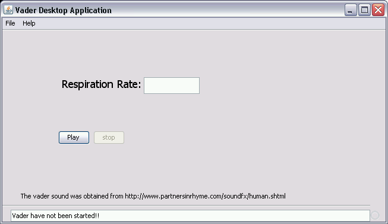
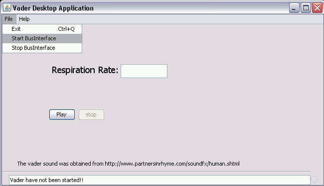
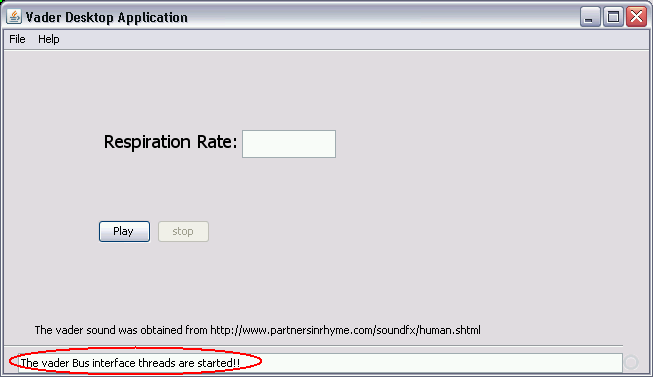
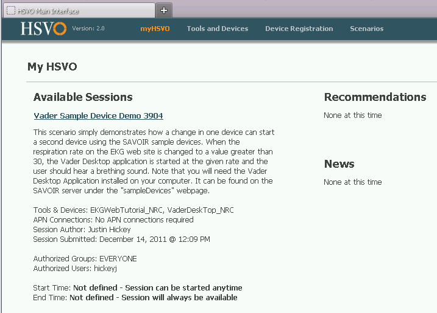
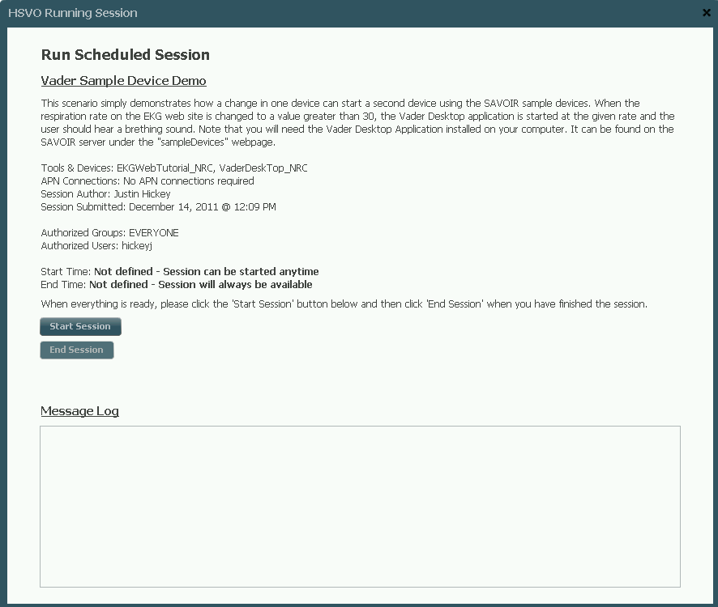
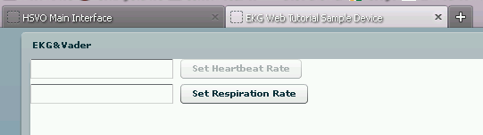
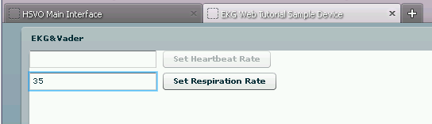
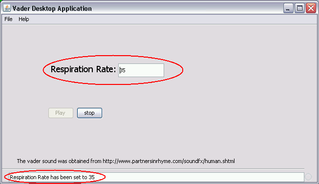
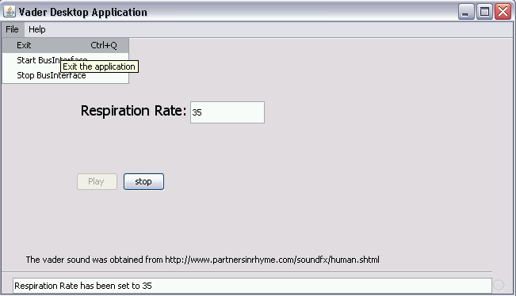
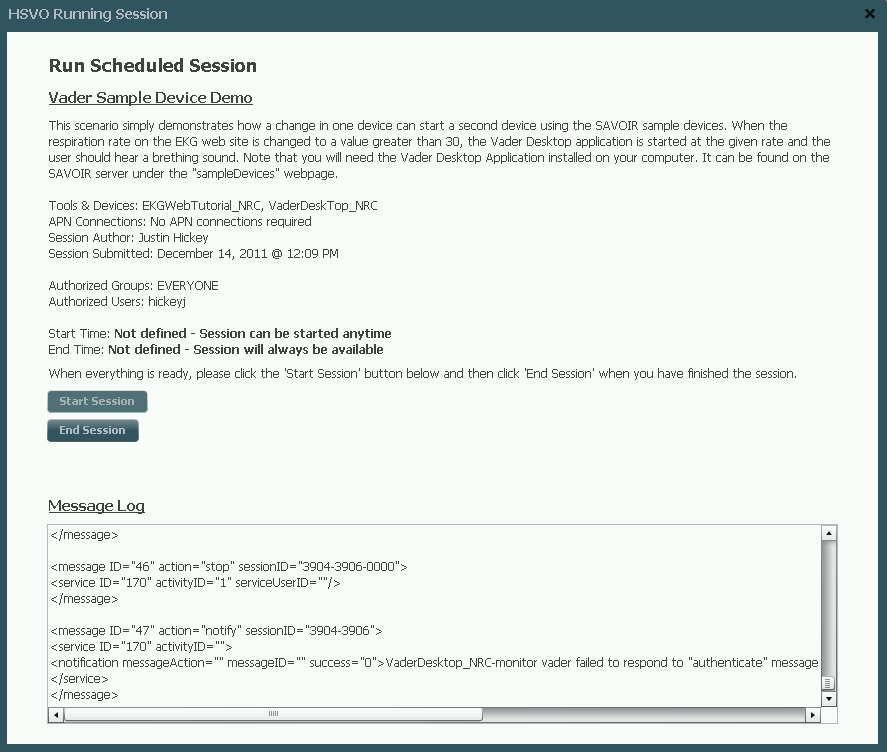

SAVOIR ${savoir.release.ver} Vader Sample Device Guide
Table of Contents
- Introduction
- Initial Preparation
- Running the Vader Desktop Application
- Testing the Session
- Cleaning Up
In order to test SAVOIR sessions, a simple session has been stored within the default database named
Vader Sample Device Demo. Running this session will demonstrate how a change in one
device can start a second device. The two devices are
- The Vader Web Tutorial
- The Vader Desktop
The Vader Web Tutorial is a simple Flash website that allows the user (for this demo) to
enter in a respiration rate and send this to the Vader Desktop application.
The Vader Desktop application runs on your local computer and waits for a message from the
Vader Web Tutorial. When the message arrives, it updates it's display and then plays a
sound similar to Darth Vader breathing.
The Vader Web Tutorial should have been installed on the SAVOIR server during the
installation process. Therefore, there is no need for any further installation or configuration.
The Vader Desktop application will need to be downloaded from the SAVOIR server since it is
required to run on your local computer. It is simply a jar file, and can be found at the following
location.
- http://${savoir.vadr.deploy.host}/sampleDevices/vaderDesktop/
This website simply lists the VadarDesktop.jar file. Once you download the file, it
can be stored in any convenient location.
NEED TO MENTION SAVOIR LAUNCH FILE
To run the the Vader Desktop application you should be able to just double click
on the icon of the VadarDesktop.jar file. If this fails, you can alternatively run
the application from the command line. Simply change directory to the folder containing the
VadarDesktop.jar file and then run the following command
- java -jar VaderDesktop.jar
Once the application is running you should see a window similar to the one below:

In order to start the application so that it is listening for messages, you need to start the
bus interface. To do this, simply click on the File menu button and select
Start BusInterface as shown below:

When the application is listening, the status window will indicate that the bus interface has
started, as shown below:

Before you can test the Vader Sample Device Demo session, you need to ensure that
the Vader Desktop application is running and listening to the bus
interface
If you haven't already done so, log in to SAVOIR at the following URL:
- http://${savoir.logn.deploy.host}/savoir/
Once you're logged in, you should see a page similar to the following:

Click the Vader Sample Device Demo 3904 link and a window should pop up like the
one below:

Next, click the Start Session button and the Vader Web Tutorial website
should start as indicated below:

Type in a respiration rate greater than 30 as shown in the following and then click the Set
Respiration Rate button

If your computer speakers are working properly, then you should start to hear a breathing sound and
the Vader Desktop application should have been updated similar to the following:

To stop the breathing sound simply quit the Vader Desktop application by clicking
File then Exit as indicated below:

Then you can close the now paused Flash web page for the Vader Web Tutorial and
then click the End Session button on the session pop up window as shown in the
following:

Copyright © , National Research Council of Canada